Brief
As our population ages, many adult children are becoming more involved in their parent’s care. This includes larger issues such as finances and make their homes safer to more daily involvement such as transportation and meals. Parents are taking more medication so an added stress with s parent still on their own is making sure they take the right medication and at the right time. Besides, if a medication is missed, a care giver such as child does not have a useful way to monitor their parent’s medication.
Task
This project aims to design three artifacts:
◦ A mobile application that monitors the patient's medication dosage status which is used by the caregiver.
◦ An automatic medication dispensing device to help the patient take medication without forgetting.
◦ An artifact the patient will always carry that communicates with the other two devices in order to provide visual information and auditory guidance.
Scenario Based Design
To understand context information about the user (care giver) and how the iOS app can address the situation, I created a scenario that presents a typical situation of how a care giver might use an iOS app to monitor a patient's medication dosage.
User story
Alisa is working on her master’s degree of Human-Computer Interaction at Atlanta. She is a 28 years old User Experience Designer, used to work for a local design studio four years at Saint Paul, Minnesota, where she grew up and where her parents are living at. While Alisa stayed at Saint Paul, she lived in an apartment that was 10 mins walking distance from her parents’ house. Because her parents have been facing health issues and they have to consume multiple medication.
- Her mother, Jane, has been diagnosed with diabetes and needs to take pills thrice a day to keep her blood sugar under control. Her medicine needs to be taken after meals.
- Alisa’s father, Dennis, has been suffered from high cholesterol and high blood pressure so that he needs to take two medicines quartic a day and reduce his salt intake in diet.
One year ago, Alisa decided to return to campus and apply for a master’s degree to further her career. However, she received an offer from Georgia Institute of Technology, which is her dream school, but far away from Saint Paul. Alisa was very reluctant to move to another city, because she felt really uncomfortable of leaving her parents behind. But her parents encouraged her to take this offer because it benefited her career.
To better take care of her parents when she would move to Atlanta, Alisa bought her parents an automated pill dispensing device to remind them of taking their medication on time. The device came with an iOS application for informing care giver about patients’ status and monitoring patients’ regular medical checkups so that Alisa could keep tracking her parents even if she had to move to another city.
Once the device was completely set up,
- Alisa would get notifications if her parents forget to take their medicines.
- She would also receive reminders of making appointments with doctors online when her parents need to take medical checkups once a month.
Persona

Scenario walkthrough wireframes
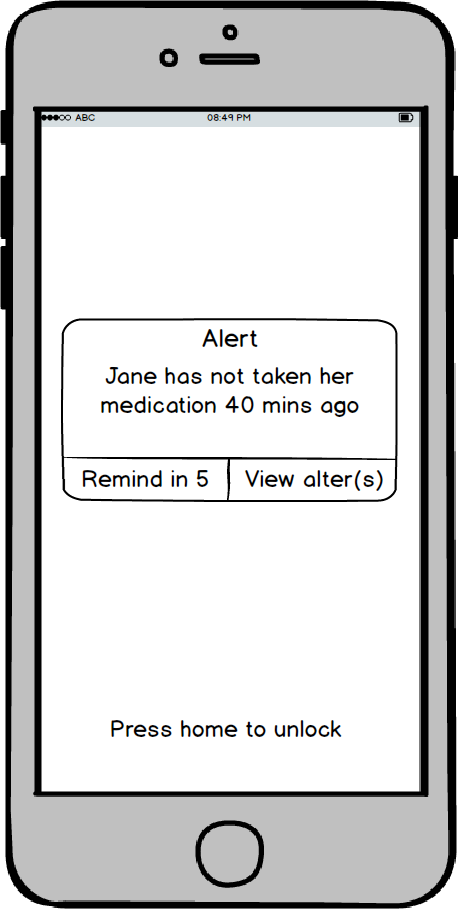
After using the app for half a month, Alisa notices that her mother has a tendency to delay taking her noon pills and she takes it at around 2 to 3 pm instead of right after lunch.
Alisa checks alter status on her mother’s medicine history, and she opens a drop down list from the button “status”.
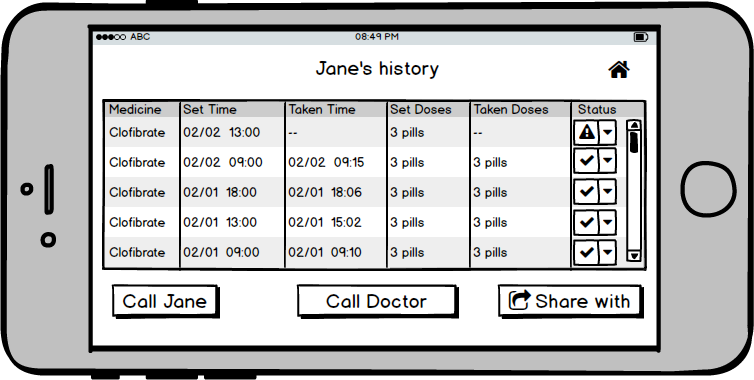
Alisa finds that she usually receives more than four notifications at noon until Jane takes her noon pills. Alisa called her mother and found out that Jane has difficulty hearing notification from device when she was preparing lunch at kitchen.
To address this problem, Alisa goes to the reminder section and edits her mother’s reminder by increasing the alarm frequency to every 10 minutes and louder volume.
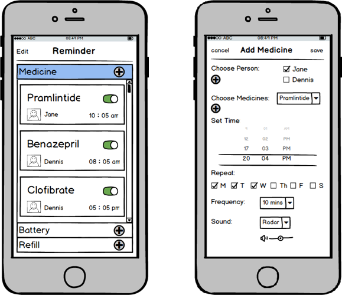
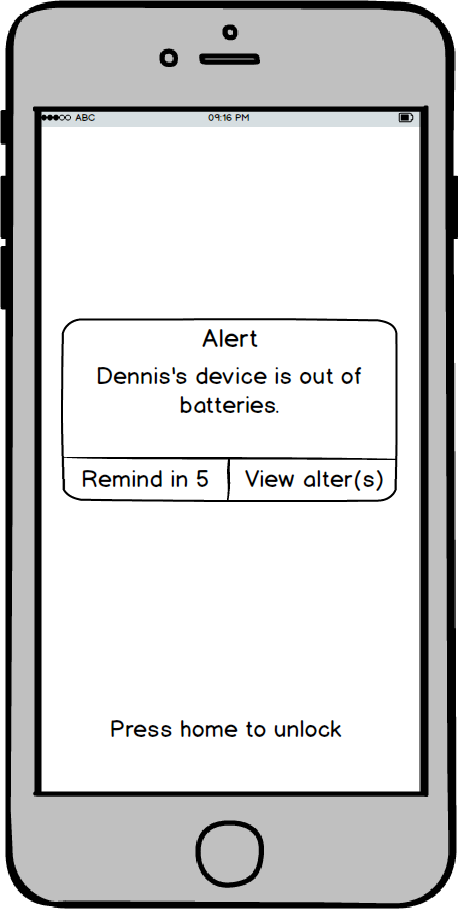
One day Alisa is working on her presentation for tomorrow’s class, she notices her phone is vibrating and sending her an alter that her father’s pill dispensing device is almost out of batteries.
Before calling her father, Alisa wants to wait for a while and she thinks that Dennis will notice the alter himself. So Alisa presses “Remind in 5” and continues her studying.
However, after 15 minutes, the app has sent the later thrice but Dennis still doesn’t charge the device. In order to not lose tracking of her father, Alisa calls Dennis and reminds him of charging his device immediately.
Then Alisa adds a reminder of charging device at 10 pm every day under Dennis’ account at the iOS application.
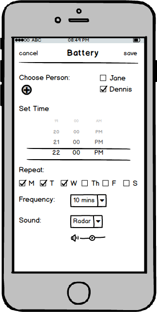
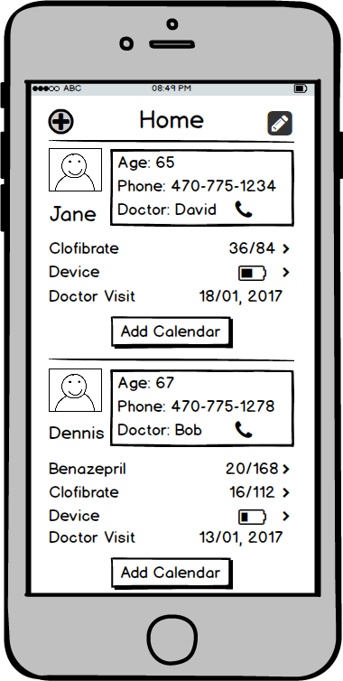
When Alisa is checking her parents’ medicine status, she notices that her father’s pill dispensing device needs to be refilled soon. She remembers that her father needs to visit doctor and take a regular checkup before ordering new medicines.
Alisa opens the calendar section and adds a reminder one day before the checkup. She also adds a note that she needs to send her father’s medicine history to doctor when she would make an appointment with the doctor for her father.
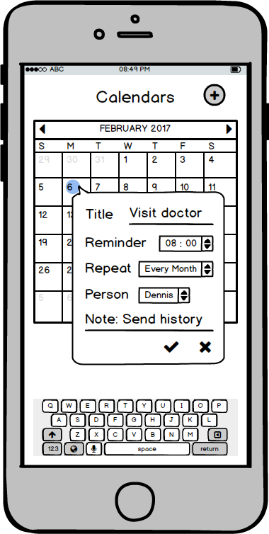
A Closer Look at Mobile
◦ Contact parents when they missed medications.
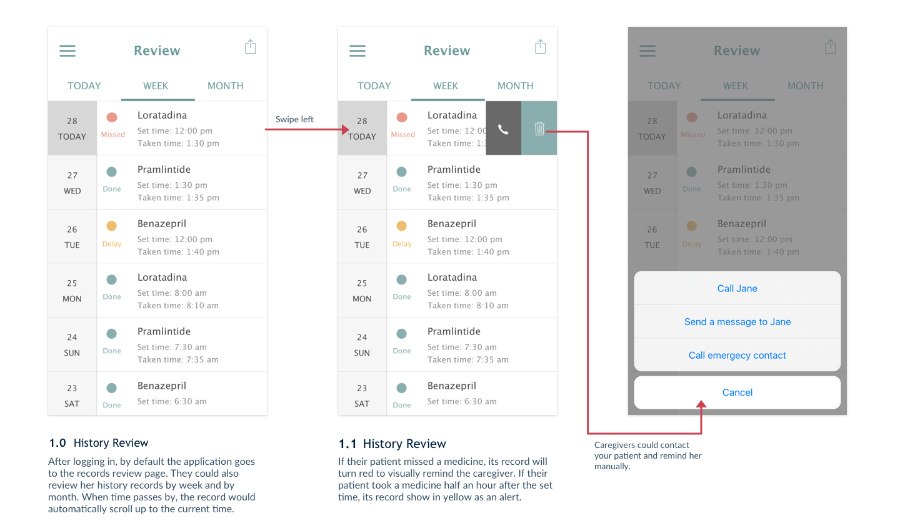
◦ Set up medication notifications.
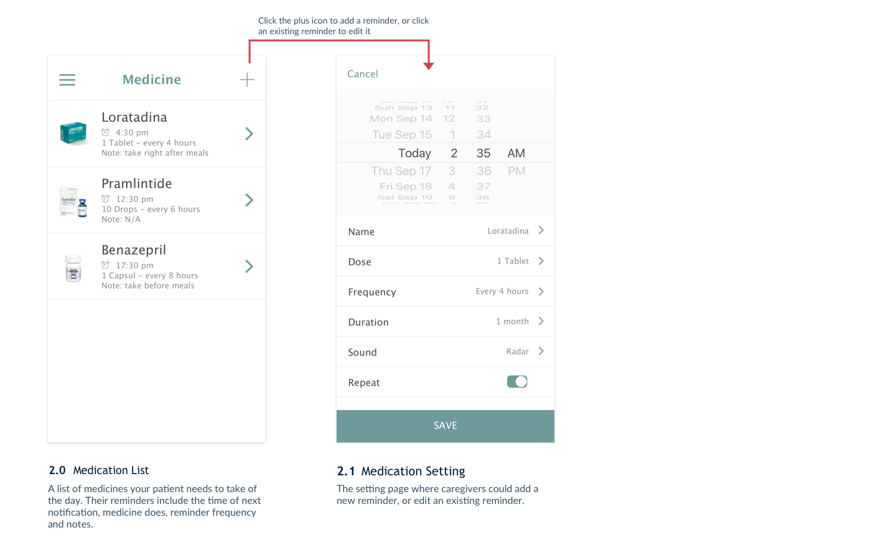
◦ Set up appointment reminders.
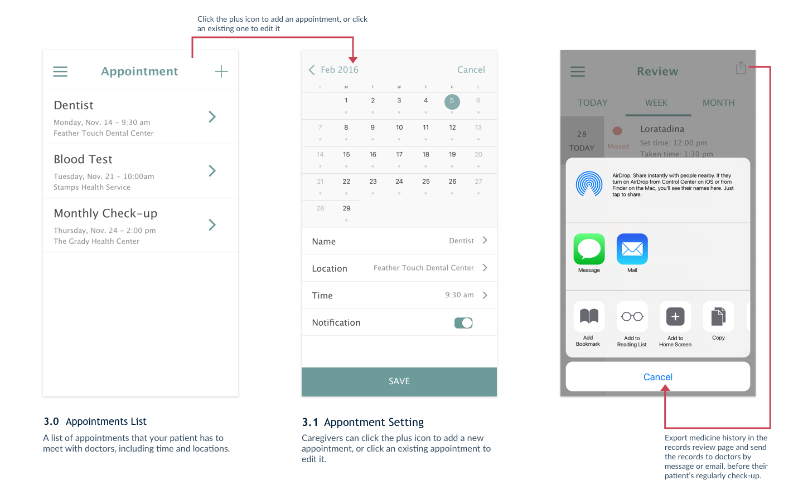
◦ Receiving missed medication alert.
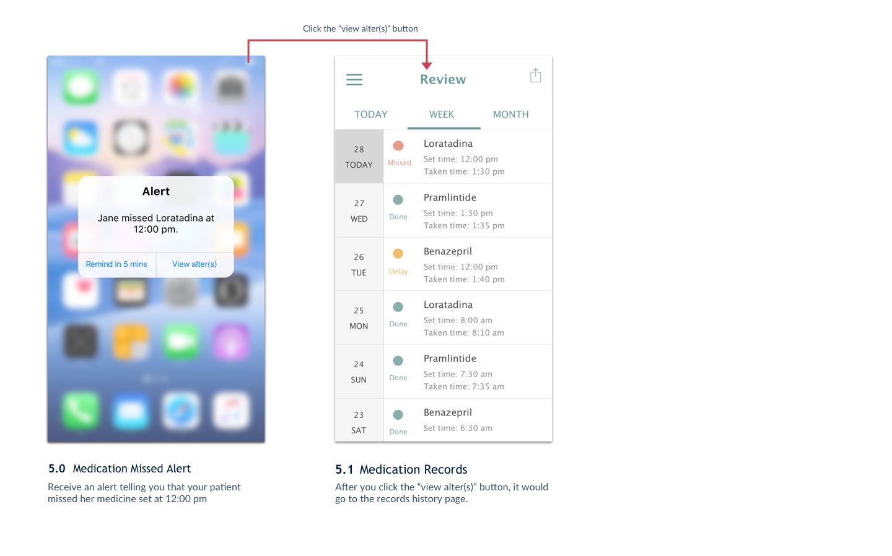
◦ Manage device account connections.
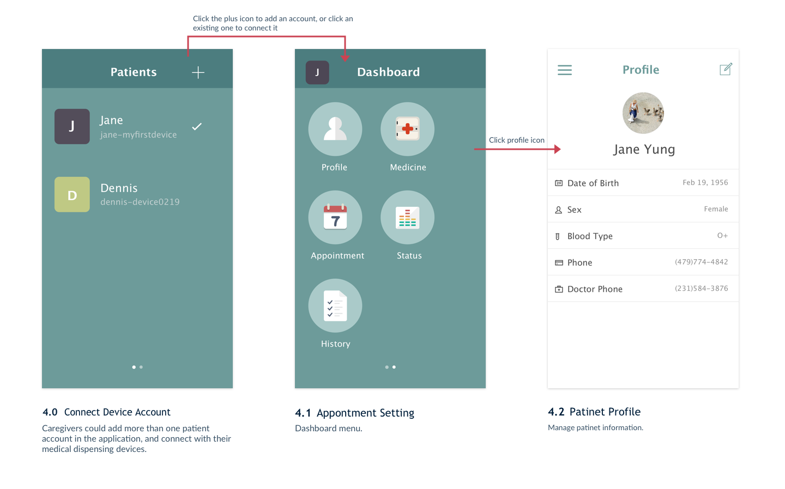
◦ Receiving battery and refill notifications.
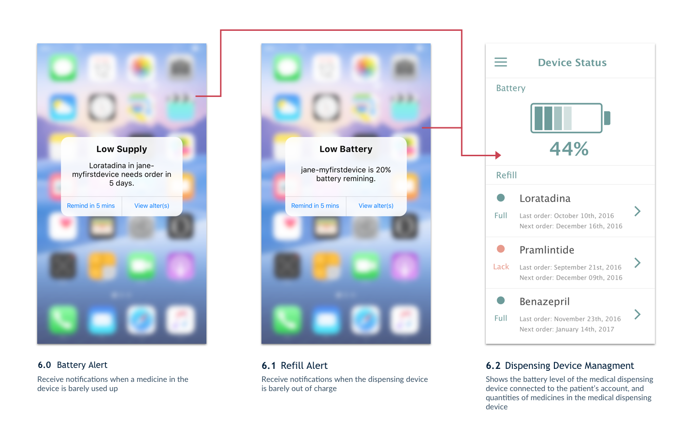
User Test Tasks
The user test is aimed at testing overall flow of the application from screen to screen. And users are expected to successfully carry out 3 tasks with the application.
1. Suppose your device has already connected to the application, try to add a reminder of a medicine that your patient needs to take during the month, and edit one existing medicine reminder for a different time.
2. Suppose the application is connected with your doctors’ accounts, try to set an appointment for your patient with her dentist.
3. When you receive an alert regarding that your patient has missed a medicine, try to review her medical taken records and contact her to check on her status.
User 1
Participant Name: Freya
Gender: Female
Age: 42
Occupation: An environmental engineering professor
Feedback
While taking the three tasks, Freya is smooth with the first two tasks. She said she likes the UI design because it matches design conventions of setting pages in iOS devices. She is familiar with interactions regarding setting a reminder and add an event in her iPhone calendar, so interactions in the application is intuitive.
However, she got confused with the last task. Because in her mindset, she thinks every record is correspondent to the date showing on the left. So she would not tap the date as a menu button to open previous records. In addition, she suggested me to change the icon of medicine page in the dashboard. Because she thinks heart does not represent medicines. According to her suggestion, I changed the icon to a medicine kit. And I added a light grey background to the date session in the review page, which divides date menu from record list.
User 2
Participant Name: Lyric
Gender: Female
Age: 25
Occupation: A graduate student in visual design
Feedback
Lyric completed the three tasks quickly, because she is expert in interface design and user experience design. She said she likes the transparent interface design, and she agreed that this application should be simple and straight forward.
However, she pointed out that I broke some design guidelines in my previous interface. One is that I should not use rounded rectangles to display medicine taken status in the review page. Because rounded rectangle is the shape for buttons, which would lead users to intuitively click it. Based on her suggestion, I changed to use a small circle before the name of the medicine to show the medicine taken status. Other one is that she suggested me to change icons in the medicine page to images of medicines. Because images help user recognizing medicines quickly, while icons are burdensome decorations here.